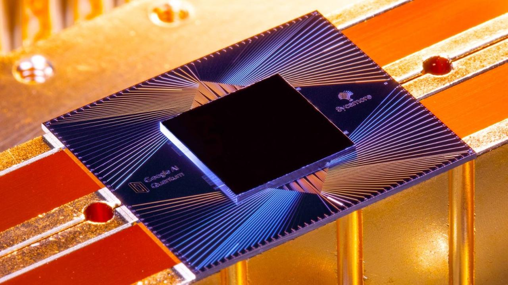

Quantum Computers
Computers Of The Future
What are Quantum Computers?
A quantum computer is a type of computer that uses quantum bits (qubits), which can exist in multiple states at once through superposition and become linked through entanglement, allowing it to solve certain problems much faster than classical computers. Their processing power allows them to run processes parallel to one another, unlike classical computers, which work sequentially. While they are both called computers, quantum computers are not meant to replace traditional computers completly, but are rather meant as an accelerator for certain types of calucations that a typical computer would be too slow for. Each type of computer is good at different tasks, and they can support each other to solve problems more efficiently
Why is this important to us?
Quantum computers are important because they can solve some problems much faster than normal computers. Quantum computers use qubits, which can be 0 and 1 at the same time. This allows them to process many possibilities at once. In the future, quantum computers could help us create new medicines by simulating molecules more accurately. They could improve weather forecasts and help fight climate change by analyzing complex data. Quantum computers may also make transportation and energy systems more efficient. Even though they are still developing, quantum computers could change science, technology, and daily life in ways that are not possible with today's computers.

Uses
Did you know that we have an entire site detailing what you could be using a quantum computer for?
Visit the Page!What can we use them for?
In the future, if quantum computers become available to the general public, people could use them to solve very complex problems in seconds. They might help students understand difficult subjects, like physics or chemistry, by simulating experiments at home. Families could use them to plan trips by finding the fastest and cheapest travel options instantly. They could also help with weather forecasts, giving early warnings about storms or heatwaves. This would help people stay safe and prepare in time. Additionaly, finance business may use quantum computers to be able to predict stock market changes and be able to quickly respond to financial changes. Tools with quantum mechanics will strengthen artificial intelligence by optimizing models to make them operate at a faster speed. However, AI will still use a combination of classical and quantum computers.
Impact on Security
Quantum computers could have a big impact on cyber security.
They might break some of today's encryption systems much faster than normal computers.
This means banks and governments would need stronger protection.
At the same time, quantum technology could create new, safer encryption methods to protect personal data and online communication.
So they will have a massive impact on the future of cybersecurity across the whole internet.
Learn more here!